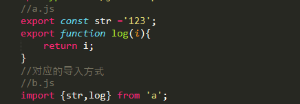
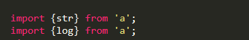
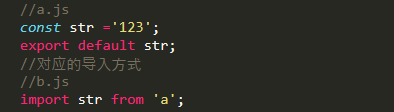

moduld.exports、exports、export、export default的区别
- module.exports和exports是属于CommonJS模块规范
- export和export default是属于ES6语法
- module.exports和exports导出模块，用require引入模块
- export和export default导出模块，import导入模块
- exports其实是module.exports的引用，可以直接在exports对象上添加相关的方法。var exports=module.exports
- export与export default 均可用于导出常量、函数、文件、模块等
- 在一个文件或模块中，export可以有多个，export default仅有一个
- 通过export方式导出，在导入时需要加{},export default 则不需要，因为export输出多个值，export default则输出单个值
- export与export default不要同时使用
-
export使用示例

-
export也可以多次import，等价如下示例

-
export default使用示例
